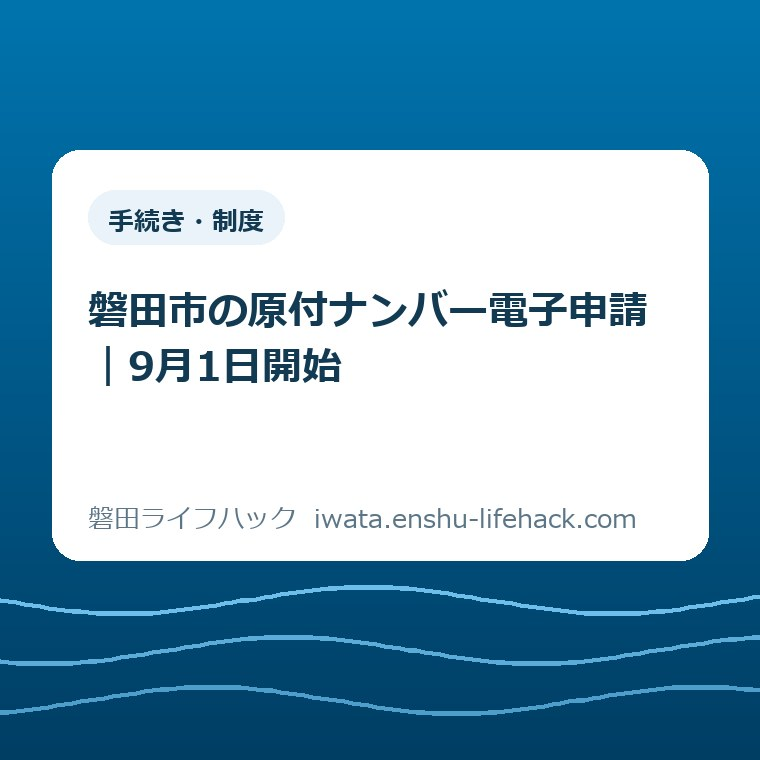

手続き・制度
磐田市の原付ナンバー電子申請｜9月1日開始

この記事の要点
Q. 平日に市役所へ行けなくても、磐田市で原付ナンバーを取れますか？
A. 2026年9月1日から、原付などの新規登録は電子申請を選べます。24時間入力でき、標識は郵送で届きます。ただし郵便料430円、到着まで1週間〜10日程度が必要です。急ぐ場合は市民税課か各支所の窓口を選び、個別条件は磐田市公式ページで確認してください。
導入——市役所へ行く時間を先に払ってきた人へ
磐田市で125cc以下の原付などを買い、ナンバープレートを新たに受け取りたい方へ向けて書きます。制度の利用可否は車種、所有者、定置場、書類によって変わります。申請前と走り出す前に、磐田市公式ページと市民税課で個別条件を確認してください。
平日に働く人は、手続きの前から負担を払っています。職場へ休みを伝える。販売店から書類を受け取る。市役所や支所まで移動する。窓口の待ち時間を見込み、家族の車を借りる場合もあります。
2026年9月1日、磐田市は原動機付自転車などの登録手続きの一部を電子化しました。パソコンかスマートフォンから24時間申請でき、ナンバープレートは郵送されます。窓口へ行けない人にとって、選べる入口が一つ増えました。
一方、画面から送れば、その日に走れる仕組みではありません。磐田市が示す到着の目安は申請から1週間〜10日程度です。郵便料430円も申請者が負担します。
意外なのは、430円が登録や標識交付の手数料ではなく、レターパックライトの郵便料だという点です。市公式ページにも「郵便料は、430円です」と明記されています。無料か有料かの二択ではなく、移動を郵送へ置き換える金額と捉えると判断しやすくなります。
私の結論ははっきりしています。平日に市役所へ行きにくく、標識が届くまで待てるなら電子申請は有力です。数日以内に標識が必要なら、送信を急ぐより窓口へ先に相談する方が段取りに合います。

事実整理——電子化されたのは登録手続きの一部
磐田市の「軽自動車税の概要」は、2026年9月1日から登録手続き、つまりナンバープレート交付の一部で電子申請を始めたと案内しています。2026年9月7日に同ページと関連FAQの表示を確認しました。
対象として挙げられているのは、原動機付自転車、特定小型原動機付自転車、小型特殊自動車、ミニカーです。一般的な原付について、市役所で扱う区分は125cc以下です。
「一部」という言葉は見落とせません。廃車、ナンバープレートの再交付、既存標識の交換まで、すべてが電子申請になったという案内ではありません。今回の入口は、新たな登録と標識交付を考える人向けです。
購入した車両なら販売証明書、譲り受けた車両なら譲渡証明書が基本になります。他市町村で廃車済みの車両を譲り受けた場合は、廃車証明書も確認します。
関連FAQでは、窓口で原付を登録するときも販売証明書と本人確認書類が必要とされています。電子申請になっても、車両の由来を示す書類そのものが消えるわけではありません。
原付は、所有者の住民登録地か居所で登録します。住民登録が磐田市になく、磐田市内の居所を主な定置場にする場合は、賃貸借契約書、所有者または使用者名義の公共料金領収書、郵便物など、居所を示す資料が必要です。
法人による申請や代理人による申請の扱いは、2026年9月7日時点の電子申請案内だけでは判断できません。マイナンバーカードによる本人確認と、申請者本人への発送が示されているため、該当する方は入力前に市民税課へ尋ねてください。
車種——125cc以下でも追加資料が変わる
磐田市の電子申請では、同じ電子申請の対象でも、車両の種類に応じて添付資料が変わります。排気量だけを見て準備を終えないことが、差し戻しを避ける近道です。
一般の原動機付自転車では、販売証明書や譲渡証明書に車名、車台番号、排気量などが読み取れる形で記載されているかを確かめます。書類の端が画像から切れていると、市側が内容を確認できません。
新基準原付は、二輪で排気量が50ccを超え125cc以下、最高出力が4.0kW以下の車両です。型式認定番号が分かる販売証明書、最高出力確認済証明書、最高出力確認済シールの写真のうち、いずれかで要件を示します。
特定小型原動機付自転車は、最高速度20km/h以下、定格出力0.6kW以下、長さ1.9m以下、幅0.6m以下という基準があります。専用の販売証明書、性能等確認シールの写真、仕様書やカタログのいずれかで性能を示します。
ミニカーは、輪距が分かる写真を用意します。車室のある車両なら、車室を確認できる写真も必要です。小型特殊自動車を含め、販売証明書の車種区分と現物が合っているかを先に見ます。
標識のデザインにも選択範囲があります。一般原付の第一種、第二種乙、第二種甲は、しっぺいデザインを選べます。特定小型原付、ミニカー、小型特殊は従来型のみです。
デザイン選択は楽しみの部分ですが、先に車種区分を固めます。色や見た目で区分を推測せず、販売証明書の記載と磐田市の案内を照らし合わせてください。
準備——パソコンで入力してもスマートフォンは要る
磐田市の原付ナンバー電子申請はパソコンからも入力できますが、本人確認にはマイナンバーカードを読み取れるスマートフォンが必要です。「パソコンがあるからスマートフォンは不要」とはなりません。
用意するのは、マイナンバーカード、署名用電子証明書の暗証番号、カード読取対応スマートフォン、決済手段、車両の証明書類です。暗証番号は英数字6〜16字で、利用前に思い出せるかを確かめます。
本人確認にはマイナサインを使います。アプリを入れるだけでは完了せず、LoGoフォームで申請を進める途中にマイナンバーカードを読み取ります。
郵便料430円の支払方法は、クレジットカードかPayPayです。現金を画面から納めることはできません。決済の時期や操作は、フォーム画面または申請後の連絡に従います。
販売証明書や譲渡証明書は、明るい場所で撮影します。車台番号、排気量または定格出力、販売者や譲渡者の記載が読めるかを、添付する画像を開いて確認します。
市から不備の連絡が入る場合があります。フォームでは、日中に連絡を受けられる連絡先を正確に入力します。連絡がつかないと、到着までの日数が延びたり、申請が却下されたりする場合があります。
準備段階で止まったら、無理に空欄を埋めない方が安全です。車種や証明書の扱いを市民税課へ確認し、答えが分かってから入力を再開します。
申請の流れ——送信から受け取りまで六つに分ける
磐田市の電子申請は、書類準備、フォーム入力、本人確認、内容確認と郵便料の決済、標識受取という作業に分けると、途中の確認を見失いません。内容確認と決済の順序は、画面や市からの連絡に従います。
- 販売証明書や譲渡証明書など、車種に合う資料をそろえる。
- マイナンバーカード、英数字6〜16字の暗証番号、読取対応スマートフォンを用意する。
- マイナサインを入れ、市公式ページからLoGoフォームへ進む。
- 申請内容を入力し、証明書類を添付して本人確認を行う。
- フォーム画面または市からの連絡に従い、クレジットカードかPayPayで郵便料430円を支払う。
- 追跡可能なレターパックライトで、郵便受けに届く標識を受け取る。
審査と決済の細かな前後関係は、磐田市公式ページに固定の時系列として示されていません。画面と市からの連絡を優先し、自己判断で同じ申請を重ねて送らないようにします。
標識は申請者本人にだけ発送されます。送付先は原則としてマイナンバーカードに登録された住所です。職場、販売店、別居家族宅を自由に指定できる前提で進めないでください。
発送はレターパックライトです。追跡番号で配送状況を確認でき、受け取りは対面手渡しではなく郵便受けです。表札や郵便受けの表示が現在の住所と合っているかも見ておきます。
申請から標識が手元に届くまでの目安は1週間〜10日程度です。不備がなくても当日交付ではないため、納車日、通勤開始日、保険の始期を一枚の予定表に置くと勘違いを防げます。
10日を過ぎた時点の問い合わせ方法や、追跡番号の通知方法は、申請後の連絡内容によって確かめます。この記事では、市公式ページに書かれていない固定日数や連絡時刻を作りません。
受け取り後——標識だけでは公道を走れない
原付ナンバーを受け取っても、標識を手にしただけで公道を走る準備が全部終わるわけではありません。原動機付自転車には自賠責保険または自賠責共済への加入義務があります。
標識を車両へ正しく取り付け、自賠責保険・共済の手続きを済ませます。保険標章の扱い、ヘルメット、車種に応じた交通ルールも、走行前に確認してください。
軽自動車税は、毎年4月1日時点の所有者へ年額で課税されます。4月2日以降に登録や廃車をしても月割りの課税や還付はありません。2026年9月の登録なら、月単位で税額が積み上がる仕組みではありません。
登録後の税や、将来の廃車・名義変更の入口は、軽自動車税・原付の手続きガイドでも確認できます。電子申請の記事と、手続き全体の案内を分けて使ってください。
窓口との選び分け——430円と待つ日数を比べる
電子申請と窓口申請の選択は、便利か不便かだけでは決まりません。標識が必要な日、平日に動ける時間、市役所までの往復、郵便料430円、書類の読み取りやすさを同じ紙に並べます。
急ぐ方は、市民税課または各支所の窓口を検討します。窓口の取扱業務や受付時間は変わる場合があるため、出発前に市役所・支所の場所と受付時間を見て、市へ電話で確かめるのが堅実です。
平日に動けず、1週間〜10日程度を待てる方は電子申請と相性があります。販売証明書が手元にあり、カードの暗証番号が分かり、スマートフォンで読み取れることが入口です。
磐田市は南北27.1キロあります。本庁と福田・豊岡・豊田・竜洋の四つの支所までの距離は、住む地区で変わります。移動負担は市役所と四つの支所から暮らしの距離を測った記事で整理しました。
往復のガソリン代だけでなく、仕事を抜ける時間、家族に頼む時間、待合で使う時間も負担です。430円と比べる相手は交通費だけではありません。
電子申請なら必ず楽になるとも限りません。暗証番号が分からない、カードを読めない、証明書の文字が薄い、車種区分に迷う。該当する場合は窓口で書類を見てもらう方が早いことがあります。
資格確認書の更新と再交付を整理した記事でも、本庁、支所、電子申請は同じ手続きへの別の入口でした。入口が増えても、必要書類、費用、受け取るまでの日数は制度ごとに違います。

良い点——休みを取らずに入口へ立てる
磐田市が原付などの新規登録に電子申請を加えた良い点は、平日の窓口時間に合わせなくても申請の入口へ立てることです。24時間入力できるため、仕事や子育てが落ち着いた時間を使えます。
標識の発送がレターパックライトで、追跡できる点も良いところです。普通郵便のように所在が全く分からない状態を避けられます。
支払方法にクレジットカードだけでなくPayPayがあることも、手元の選択肢を増やします。郵便料のためだけに納付書や現金を用意する必要はありません。
市役所から離れた地区ほど、移動を一回減らす効果は大きくなります。南北27.1キロという市域では、同じ「市内」でも窓口までの時間は一様ではありません。
私は、電子申請そのものを歓迎します。すでに市民が払っていた休暇調整と往復時間を、市が手続きの負担として数えた結果だからです。
注文したい点——入口だけをデジタルにして終わらせない
磐田市の電子申請に注文したい点は、申請前の画面だけで「自分は対象か」「何の画像を撮るか」「いつ届くか」が一目で分かる案内を保ち続けることです。制度開始直後の説明が、更新で薄くならないよう望みます。
私はデジタル化に前向きです。ただ、画面へ丸投げして窓口の説明を減らすだけなら、分からない人の負担は消えません。迷った人が電話や窓口へ戻れる道を残してこそ、入口が増えた意味があります。
430円は郵便料だと、決済前にも明確に見せてほしいところです。登録手数料と受け取られると、窓口との差を正しく比べられません。
1週間〜10日という幅も、申請者にとっては予定そのものです。不備連絡、決済、発送の各段階がメールで分かれば、ただ待つ時間を減らせます。
法人、代理人、マイナンバーカード住所とは別の居所にいる人の扱いも、想定例を増やしてほしいと私は考えます。明記されていない条件は、市民が入力途中で初めて迷うからです。
注文は職員個人への不満ではありません。新しい仕組みを、使える人だけの近道で終わらせないための要望です。
対案・結論——今日、販売証明書の一枚を開く
原付ナンバーの電子申請を考える方が2026年9月7日にできる一歩は、販売証明書か譲渡証明書を開き、車名、車台番号、排気量または定格出力が読めるか確かめることです。
書類が読めれば、次にマイナンバーカードの署名用暗証番号と、読取対応スマートフォンを確認します。ここまでそろって初めて、電子申請の入口に立てます。
標識が必要な日も一つ決めます。必要日まで10日を切っているなら、市公式ページを見たうえで市民税課か各支所へ連絡します。
10日以上の余裕があり、平日に窓口へ行きにくいなら、電子申請を選ぶ理由があります。430円を払い、移動と待ち時間を減らす選択です。
今日中に申請を送る必要はありません。書類、端末、決済、必要日を一枚に書き、使う入口を決められれば前進です。
確認する順番——五分で入口を決める
磐田市の原付ナンバーを新規登録するときは、車両、書類、本人確認、必要日、受取住所の順に見ると、電子申請と窓口を選びやすくなります。
- 車種が一般原付、新基準原付、特定小型原付、小型特殊、ミニカーのどれかを確認する。
- 販売証明書または譲渡証明書と、車種別の追加資料を確認する。
- マイナンバーカード、英数字6〜16字の暗証番号、読取対応スマートフォンを確認する。
- 標識が必要な日から1週間〜10日を逆算する。
- 原則の送付先であるマイナンバーカード登録住所の郵便受けを確認する。
- 待てるなら電子申請、急ぐなら市民税課か各支所へ相談する。
判断がつかない項目を一つだけ丸で囲みます。市へ電話するときは「原付の電子申請について、車種区分と必要書類を確認したい」と伝えると、質問の焦点がぶれません。
家族で残す記録——申請状況と必要日を同じ場所へ
電子申請を家族の誰かが進めた場合は、申請日、申請番号が発行された場合はその番号、使った連絡先、郵便料の支払状況、標識が必要な日を同じメモへ残します。
マイナンバーカードの暗証番号そのものは、共有メモへ書かないでください。家族に伝えるのは、申請を済ませたか、連絡が来ているか、受け取りを確認したかです。
レターパックライトの追跡番号が通知されたら、番号と確認日を残します。郵便受けを誰が見るかも決めておくと、届いた標識を見落としません。
販売証明書、申請画面、決済完了の記録は、個人情報が入っています。共有端末へ置きっぱなしにせず、保管先を決めます。
大石の視点——便利さは、使える日から逆算する
大石浩之（磐田市／不動産業）として、ここからは公表情報ではなく私の意見を書きます。このテーマに使える個別の体験ストックはないため、窓口で見聞きした話や申請した実話は作りません。
不動産の手続きでも、オンラインで送れることと、必要な日に書類がそろうことは別です。私は、便利さを入力時間の短さだけで判断しません。
原付ナンバーの電子申請も同じです。24時間入力できることは良い。ただし、標識が届くまで1週間〜10日かかります。使い始めたい日から逆算できなければ、便利な入口が予定の遅れに変わります。
私の言い切りは、430円を惜しむかどうかより、必要日に間に合う入口を選ぶ、です。平日に半日動く負担が430円を上回る家庭はあります。急ぐ家庭には、430円を払っても電子申請が合わない場合があります。
一つ迷いもあります。電子申請を使えない人を、窓口へ行ける人と同じ意味で扱ってよいのかという点です。カード、暗証番号、対応端末、画像撮影、電子決済の五つがそろわない人もいます。
だから私は、「電子申請が始まったから窓口は要らない」とは考えません。電子と窓口の両方を残し、事情に応じて選べることが市民の実利になります。
今日の成果は、送信完了だけではありません。販売証明書を開き、必要日を決め、電子か窓口かを選べた。それだけでも、次の平日に慌てる可能性を一つ減らせます。
最終整理——電子申請が合う条件
磐田市の原付ナンバー電子申請は、2026年9月1日に始まりました。24時間申請できる一方、本人確認、郵便料、到着日数を含めて選ぶ制度です。
- 対象は原付、特定小型原付、小型特殊、ミニカーの登録手続きの一部。
- マイナンバーカード、英数字6〜16字の暗証番号、読取対応スマートフォンが必要。
- 郵便料は430円。クレジットカードかPayPayで支払う。
- 標識はレターパックライトで届き、申請から1週間〜10日程度が目安。
- 急ぐ場合は市民税課か各支所へ確認し、走行前に自賠責保険・共済へ加入する。
制度や車種別書類は変更される場合があります。最後は磐田市の「軽自動車税の概要」と申請画面で最新情報を確かめ、個別条件は市民税課へ確認してください。
よくある質問
磐田市の原付ナンバー電子申請について、申請者、到着日、急ぐ場合の三つを整理します。
磐田市の原付ナンバーは、誰が電子申請できますか。
磐田市の案内は、マイナンバーカード、署名用電子証明書の暗証番号、読取対応スマートフォンを用意し、申請者本人へ標識を送る流れです。法人や代理人による申請の扱いは公式ページに明記されていないため、市民税課へ確認してください。
電子申請後、ナンバープレートはいつ届きますか。
磐田市は申請から手元に届くまで1週間〜10日程度と案内しています。郵便料430円を支払い、レターパックライトで原則マイナンバーカードの登録住所へ届きます。不備や連絡不通があると遅れる場合があります。
急いで登録したい場合も電子申請を選ぶべきですか。
急ぐ場合は、電子申請を送る前に市民税課または各支所の窓口へ相談してください。電子申請は24時間入力できますが、標識到着まで1週間〜10日程度です。必要な日から逆算し、430円と移動時間を比べて入口を選びます。
参考にした公式情報
- 軽自動車税の概要／磐田市（2026年9月7日確認・ページ更新日2026年9月1日）
- 原動機付自転車の登録（標識交付）の手続きを教えてほしい／磐田市（2026年9月7日確認・ページ更新日2024年4月1日）
- 住民票の写しや税の証明書などの電子申請／磐田市（2026年9月7日確認・ページ更新日2026年2月24日）

最終確認日：2026-09-07 ／ 本記事は公表情報と執筆者の見解を分けて記載しています。制度・数値・公開状況は変更される場合があるため、最新情報は磐田市公式ページでご確認ください。